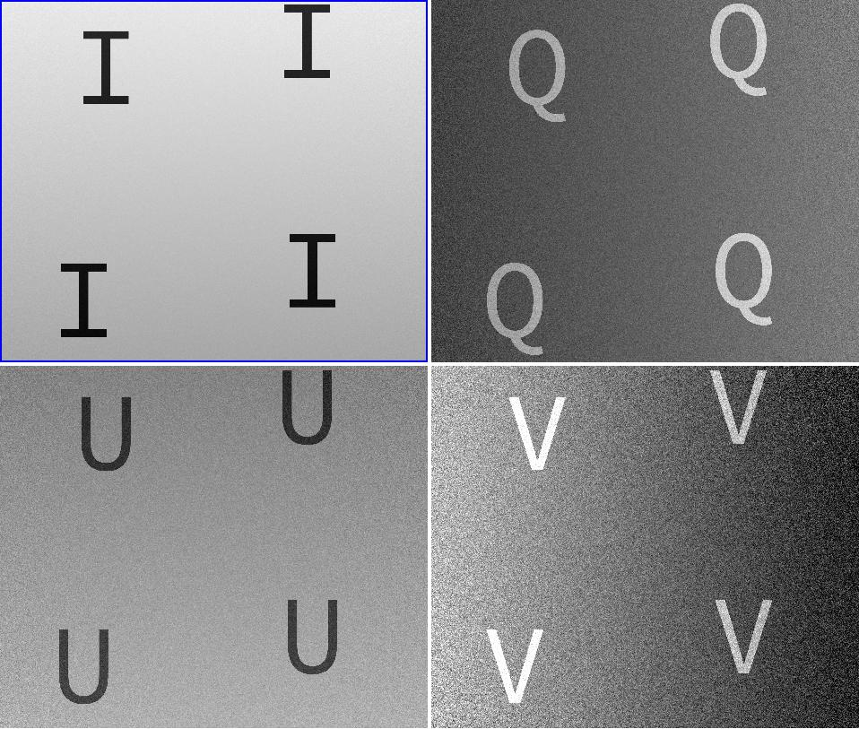

Data Reduction Walkthrough¶
Input Data¶
For this walkthrough we’ll use a set of highly contrived fake Stokes images generated by CryoNIRSP’s fake data script,
cryo_fake_data. Unfortunately, the script requires some files that are too large to include in the code repository.
Ask A. Eigenbrot for a set of fake data.
PolCal Data¶
We’ll also need a set of CryoNIRSP data from a PolCal run. This can be generated by the PA&C Modules’, which you should have installed already:
$ pac_fake_data -I cryo -C efficient_CS polcal
...
CRYONIRSP_20160523T000000.000000_0.fits
CRYONIRSP_20160523T000001.000000_1.fits
CRYONIRSP_20160523T000002.000000_2.fits
CRYONIRSP_20160523T000003.000000_3.fits
CRYONIRSP_20160523T000004.000000_4.fits
CRYONIRSP_20160523T000005.000000_5.fits
...
Setup¶
Now let’s create a default config file:
$ mkdir rdx
$ cd rdx
$ cryo_pipeline -b config.ini
Now we’ll need to populate the config file, which should be pretty straight forward.
[Main]
raw_sci_dir = ../raw
output_prefix = Sci
dark_cal = DarkCal
gain1_cal = Gain1Cal
lamp_gain_cal = LampCal
gain4_cal = Gain4Cal
align3_cal = Align3Cal
instrument_pol_cal = InstPolCal
linearize = False
[DarkCalibration]
raw_dark_dir = ../raw
[Gain1Calibration]
raw_gain1_dir = ../raw
[LampGainCalibration]
raw_lamp_dir = ../raw
[Gain4Calibration]
raw_gain4_dir = ../raw
[Align3Calibration]
raw_align3_dir = ../raw
raw_pinhole_dir = ../raw
[InstrumentPolarization]
raw_pol_dir = ../polcal
threads = 3
Run¶
This is the easy part, just call the pipeline
$ cryo_pipeline config.ini
The CryoNIRSP Pipeline produces a lot of status messages and it is usually a good idea to save these somewhere so you can see exactly what was done to the data at a later time (and find any error messages). To do this I usually run the pipeline as
$ cryo_pipeline config.ini 2>&1 | tee spool.txt
On most systems this will cause your terminal (stdout) to update much less frequently than usual. This is due to how
python decides to flush its buffer to stdout. If you want to save a spool file and get real-time status messages then
you need to set the environmental variable PYTHONUNBUFFERED=yes. You can even be real fancy and try:
$ PYTHONUNBUFFERED=yes cryo_pipline config.ini 2>&1 | tee spool.txt
Output Data¶
If you followed the steps above then you should have a directory that looks like this:
$ ls -1
config.ini
DarkCal.fits
DarkCal_unc.fits
Gain1Cal.fits
Gain1Cal_unc.fits
InstPolCal.fits
Sci.fits
spool.txt
The reduced Science data live in Sci.fits. The *Cal files are the intermediate Calibration objects. All
*_unc.fits files are the pixel uncertainties associated with the parent file.
Hopefully your reduced Science frame looks something like below
